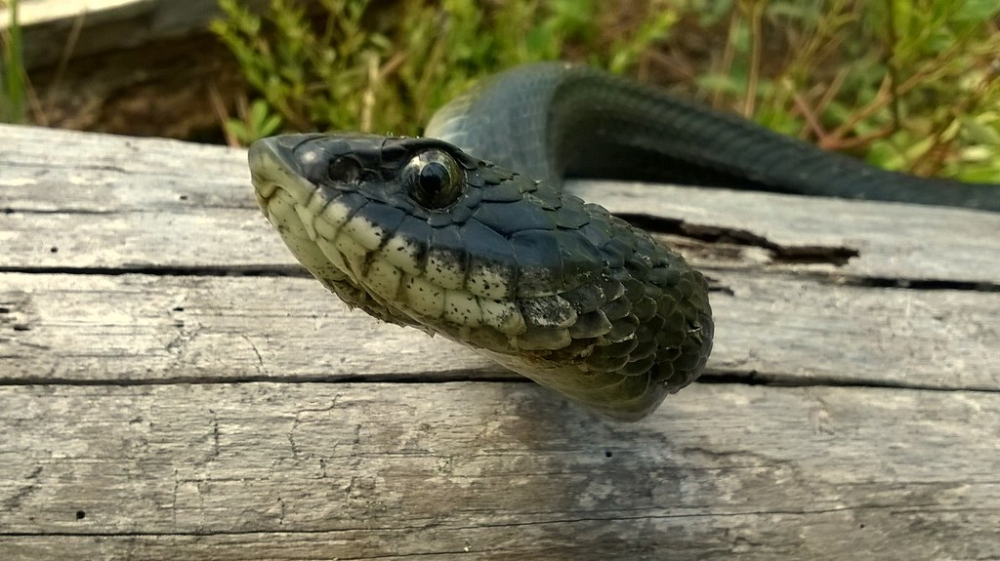
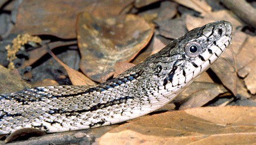

Non-Venomous Snakes
Snakes with a rounded head and pupil tend to not be harmless, the opposite is true for vemomous snakes. Snakes with a pointed head and a thin pupil tend to be venomous. However, some harmless snakes may disguise
"Eastern Hognose Snake"by Gabriel Kamener is licensed under CC BY-NC-SA 2.0


One common harmless snake is the Eastern Hognose Snake (Heterodon nasicus). It can be seen in a range of colours, such as black, brown, orange, yellow, olive, and red. It is commonly called the "drama queen" snake. It is called this because of the method of protection it uses. It will play dead when frightened.
"Eastern Rat Snake"by TomSpinker is licensed under CC BY-NC-ND 2.0


The Texas rat snake (Elaphe obsoleta lindheimeri) are not venomous, but they will bite if threatened. They can be seen as black or grey, and can reach lengths of up to 72 inches (6 feet). They are often mistaken for rattlesnakes because of their scale pattern.